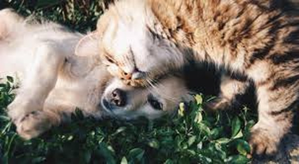
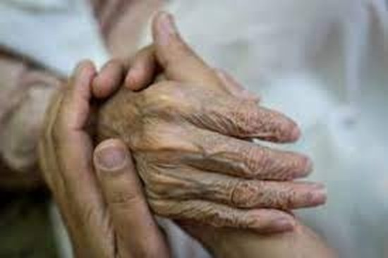

Esté siempre al alcance de sus hijos y de sus seres queridos, en caso de que ellos lo necesiten.
Con VidaVitalQR, la información esencial de una persona, una mascota o un objeto queda a un escaneo de distancia.
Cerca de quienes más quiere

Hijos y seres queridos
Un código que lleva la información esencial, para que quien los ayude sepa a quién contactar aunque usted no esté cerca.

Nuestras mascotas
Ya son parte importante de la familia. Su placa con código QR muestra los datos del dueño y cómo contactarlo, y puede ayudar a que vuelvan a casa.

Adultos mayores, hermanos, amigos y usted
Tener a mano la información fundamental ayuda a quien presta auxilio, sea en una caída, un problema de salud o cualquier percance.
Un acompañante para nuestros seres queridos
VidaVitalQR resulta de gran utilidad cuando el portador presenta un problema de salud, un accidente o algún percance que requiera tener a mano la información esencial.
Tres pasos: escanear, ver y contactar
Escanee
Con la cámara de cualquier teléfono.
Vea
La información esencial, al instante.
Contacte
Con un toque, a quien avisar.
Conozca VidaVitalQR
Para compras y más información, visite nuestro sitio o escríbanos por WhatsApp.
Los datos que muestra cada código son los que su titular decide ingresar. La ficha de la imagen es solo un ejemplo.